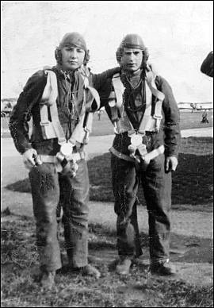

This web site is funded by the Caerwent Community Council ©2000-2018 All rights reserved
Designed by breezegraphic.com Legal Notices
BEN HARDING
Corporal 550526 Benjamin M Harding. 18 Squadron RAF
Posted as 'Missing', 23rd May 1940. Later confirmed as having died in action. Buried at Abbeville, France.
Ben’s family moved from Bargoed to start a new life under the County Council’s Land Settlement Scheme. They were the first occupants of Plas-y-Coed, Trewen, now known simply as No. 4. His father, also Ben, was stocky, very powerfully built, had been a bare knuckle fighter in his youth, and served in the Royal Horse Artillery in World War 1.
The Harding family had dug coal in Bargoed colliery, being employed as a sub-contracted team by the owners, Powell Duffryn, who also owned nearly everything else in central South Wales. Old Ben came here in his late forties to work on the County Farm, bringing his wife Gertrude and some of their children, the youngest of whom was aged 16. Altogether the couple had five boys and two girls. At least one of the girls took up work in the Farm’s glasshouses at Llanfair Discoed. 
Young Ben was born in 1919. He was very bright and attended Bargoed Grammar School. In 1937 he moved directly from there to the R.A.F. College at Cranwell where he specialised in radio. Thus he was only seen here when home on leave. In contrast with his father, he was tall and slim. He loved sports, especially football and swimming, which the R.A.F. gave him good opportunities to pursue. A quiet young man, he was devoted to his mother, he enjoyed the countryside here and had a girlfriend locally.
After his training Ben was stationed near Oxford. He is on the left in the picture, posing proudly in his new flying gear with a young comrade. During his service he flew in numerous types of aircraft on very varied missions. At the start of the war he helped to deliver a flight of 'Hart' bi-planes to Egypt - they flew in formation all the way. By May 1940 the Allies were in a desperate situation and Ben was a wireless operator with the 'Advanced Striking Force'. This was a hopeful name for half a dozen under-powered light bombers of various types, hastily assembled to support our ground troops against the big German push through France.
On May 23rd 1940 Ben’s plane set off to reconnoitre the French channel ports but it never came back. Over the next few days our troops were driven right out of France - the Dunkirk evacuation was completed on June 4th and by then all the planes of Ben’s squadron had been lost. Ben was posted missing but far from assuming him dead the Air Force encouraged hope that he may be alive and might soon find a way of making contact.Only after some months was it realised that Ben had died and was in fact buried at Abbeville in France.
This confusion over Ben’s disappearance and death has been a cause of distress to the family ever since. Only this year have the true circumstances come to light: Ben and his pilot, a holder of the Distinguished Flying Medal, had set off as reported on 23rd May and their plane was shot down. They successfully baled out and over the next day they managed to get back to base. Within a few hours an alternative aircraft was found for them but they were shot down again and this time were not so lucky. Their loss was not reported because by then the command structure of the R A F had crumbled - it may be that no senior officer knew of their departure on the last mission.
RAF PERSONNEL - GENERAL NOTES
Rank
After 1940 all aircrew were upgraded to at least Sergeant as it was realised that the pay and status of corporal and below did not match the hazards involved in wartime active service. This explains how those killed later in the war could hold a rank such as Pilot Officer although they were not pilots.
Burials
All these RAF fliers have graves somewhere as none of them are listed on the Runnymede Memorial, but I have not traced them yet.
GJ Oct 1995